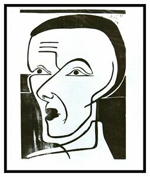

SURGIMIENTO
El expresionismo es un movimiento artístico que surgió a principios del siglo XX entre 1910 y 1925 en Alemania y que posteriormente se extendió por todo el continente europeo. Para el artista lo importante era expresar emociones, sentimientos e ideas distorsionando la realidad. El pesimismo era una de las temáticas principales de las obras y cobraba mucha importancia el mundo de los sueños.
El expresionismo supuso un nuevo concepto del arte, entendido como una forma de captar la existencia, de traslucir en imágenes el sustrato que subyace bajo la realidad aparente, de reflejar lo inmutable y eterno del ser humano y la naturaleza. Así, fue el punto de partida de un proceso de transmutación de la realidad que cristalizó en el expresionismo abstracto y el informalismo.
Los expresionistas utilizaban el arte como una forma de reflejar sus sentimientos, su estado anímico, propenso por lo general a la melancolía, a la evocación, a un decadentismo de corte neorromántico.
La pintura del expresionismo tuvo dos grandes grupos artísticos: el Die Brücke y el Der Blaue Reiter; el primero se fundó en Dresde en 1905 y el segundo en Múnich en 1911. La arquitectura en el expresionismo se caracterizó por el uso de nuevos materiales, por ejemplo materiales para la construcción como el ladrillo, vidrio y acero; también por el uso de formas biomórficas. En cuanto a la literatura, entre los temas destacados del expresionismo están la guerra, el miedo, el amor, la locura, el delirio, la naturaleza, el conflicto generacional, etc.